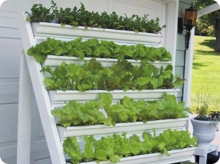
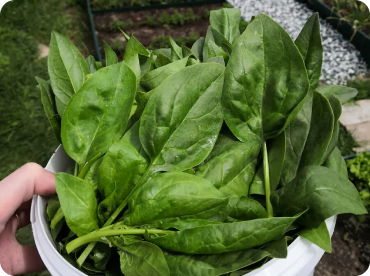
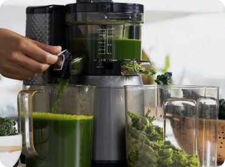
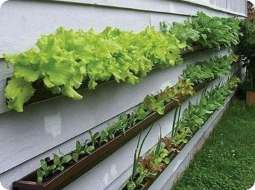
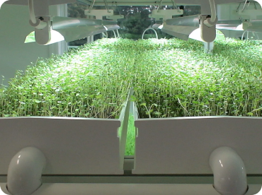

<section class="technologies">
  <div class="container">
    <h2 class="technologies__title title">Технологии</h2>
    <div class="swiper">
      <div class="swiper-wrapper">
        <div class="swiper-slide">
          <a href="#" class="technologies__item">
            
            <h3 class="technologies__subtitle">Стеллажи</h3>
            <p class="technologies__description">
              Они создают вертикальные поля, минимизируя занимаемую площадь и
              обеспечивая оптимальные условия для роста каждого растения.
            </p>
          </a>
        </div>
        <div class="swiper-slide">
          <a href="#" class="technologies__item">
            
            <h3 class="technologies__subtitle">Блок управления</h3>
            <p class="technologies__description">
              Контролирует параметры окружающей среды: температуру, влажность,
              уровень CO2, и регулирует освещение.
            </p>
          </a>
        </div>
        <div class="swiper-slide">
          <a href="#" class="technologies__item">
            
            <h3 class="technologies__subtitle">Блок смешивания</h3>
            <p class="technologies__description">
              Обеспечивает точное дозирование питательных веществ. Растение
              получает те элементы, которые ему необходимы для процветания.
            </p>
          </a>
        </div>
        <div class="swiper-slide">
          <a href="#" class="technologies__item">
            
            <h3 class="technologies__subtitle">Трубопровод</h3>
            <p class="technologies__description">
              Эффективное распределение обеспечивает равномерный доступ к
              ресурсам, минимизируя потери и обеспечивая непрерывное питание.
            </p>
          </a>
        </div>
        <div class="swiper-slide">
          <a href="#" class="technologies__item">
            
            <h3 class="technologies__subtitle">Освещение</h3>
            <p class="technologies__description">
              LED-светильники, эмулирующие естественный свет, регулируют
              фотосинтез и обеспечивают рост в условиях отсутствия естественного
              света.
            </p>
          </a>
        </div>
      </div>
      <div class="slider-nav">
        <button
          id="sliderPrev"
          class="btn-reset slider__btn slider__btn-prev"
          aria-label="Предыдущий слайд"
        >
          <svg>
            <use xlink:href="img/sprite.svg#left-arrow"></use>
          </svg>
        </button>
        <button
          id="sliderNext"
          class="btn-reset slider__btn slider__btn-next"
          aria-label="Следующий слайд"
        >
          <svg>
            <use xlink:href="img/sprite.svg#right-arrow"></use>
          </svg>
        </button>
      </div>
    </div>
  </div>
</section>
